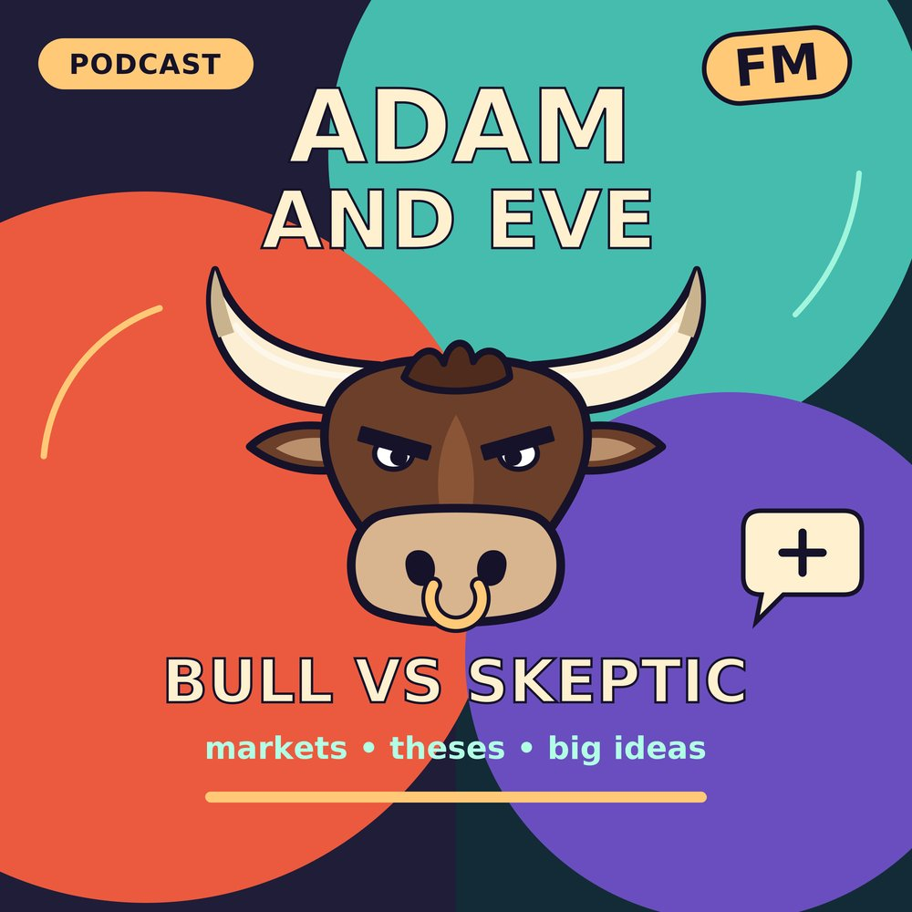

Biology Eats the Market — Adan vs Eve (Special)
A one-off special. Adan (bull) and Eve (skeptic) debate Antonio Linares's "bio/acc basket": his claim that biology drives most market returns over the next decade, and his four picks. Nautilus (NAUT) reads the proteome, Recursion (RXRX) designs drugs with A.I., ImmunityBio (IBRX) reboots the immune system with Anktiva, and MiNK Therapeutics (INKT) takes iNKT cell therapy after solid tumors. Adan makes the case from the post and its 33-minute video: biology becomes code, a read, design, reboot and strike stack, disciplined management teams, and pharma money already flowing into Recursion. Eve pushes back with the latest filings: Nautilus's first revenue of about $0.2M and its Broadscale delay, Recursion's cash burn, ImmunityBio's 45x sales valuation and the FDA warning letter, and MiNK's roughly $9M cash plus a 17-patient phase 2 with zero responses. A made-up guest, Nigel, drops by to heckle the whole idea of "platform" biotech.